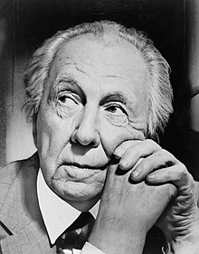

Frank Lloyd Wright
Frank Lloyd Wright | |
|---|---|
|  Wright in 1954 | |
| Born | Frank Lincoln Wright June 8, 1867 |
| Died | April 9, 1959 (aged 91) Phoenix, Arizona, U.S. |
| Alma mater | University of Wisconsin–Madison |
| Occupation | Architect |
| Spouse(s) |
|
| Children | 7, including Lloyd Wright and John Lloyd Wright |
| Awards | RIBA Gold Medal AIA Gold Medal Twenty-five Year Award (4) Order of the Star of Italian Solidarity |
| Buildings |
|
| Projects | Usonian Houses Broadacre City |
| Signature | |
{kind=link}
{kind=link}
Frank Lloyd Wright (June 8, 1867 – April 9, 1959) was an American architect, designer, writer, and educator. He designed more than 1,000 structures over a creative period of 70 years. Wright believed in designing in harmony with humanity and its environment, a philosophy he called organic architecture. This philosophy was best exemplified by Fallingwater (1935), which has been called "the best all-time work of American architecture."[1] As a founder of organic architecture, Wright played a key role in the architectural movements of the twentieth century, influencing three generations of architects worldwide through his works.[2]
Wright was the pioneer of what came to be called the Prairie School movement of architecture, and he also developed the concept of the Usonian home in Broadacre City, his unique vision for urban planning in the United States. In addition to his houses, Wright designed original and innovative offices, churches, schools, skyscrapers, hotels, museums, and other structures. He often designed interior elements for these buildings, as well, including furniture and stained glass. Wright wrote 20 books and many articles and was a popular lecturer in the United States and Europe. Wright was recognized in 1991 by the American Institute of Architects as "the greatest American architect of all time."[1] In 2019, a selection of his work became a listed World Heritage Site as The 20th-Century Architecture of Frank Lloyd Wright.
Raised in rural Wisconsin, Wright studied civil engineering at the University of Wisconsin and then apprenticed in Chicago with noted architects Joseph Lyman Silsbee and Louis Sullivan. He opened his own successful Chicago practice in 1893, and developed an influential home and studio in Oak Park, Illinois, in 1898. His colorful personal life made headlines: leaving his first wife, Catherine Lee "Kitty" Tobin, and their children for Mamah Borthwick Cheney in 1909, the murders at his Taliesin estate by a staff member in 1914, his tempestuous marriage with second wife Miriam Noel in 1923, and his relationship with Olgivanna Lazović, who became his third wife in 1928.
Early years[edit]
Ancestry[edit]
Frank Lloyd Wright was born on June 8, 1867, in the town of Richland Center, Wisconsin. In 1987 a biographer of Wright suggested that he may have been christened as "Frank Lincoln Wright" or "Franklin Lincoln Wright".[3] No birth certificate or other record proving this assertion is known to exist. Wright's father, William Cary Wright (1825–1904), was a "... gifted musician, orator, and sometime preacher who had been admitted to the bar in 1857."[4] He was also a published composer.[5] Wright's mother, Anna Lloyd Jones (1838/39–1923), met William Cary Wright while working as a county school teacher when William was the superintendent of schools for Richland County.
Originally from Massachusetts, William Wright had been a Baptist minister, but he later joined his wife's family in the Unitarian faith. Anna was a member of the well-known Lloyd Jones clan who had emigrated from Wales to town of Wyoming, Wisconsin (south of the village of Spring Green).[6] One of Anna's brothers was Jenkin Lloyd Jones, an important figure in the spread of the Unitarian faith in the Midwest. Both of Wright's parents were strong-willed individuals with artistic interests that they passed on to him.
Childhood[edit]
According to Wright's autobiography, his mother declared when she was expecting that her first child would grow up to build beautiful buildings. She decorated his nursery with engravings of English cathedrals torn from a periodical to encourage the infant's ambition.[7] In 1870, the family moved to Weymouth, Massachusetts, where William ministered to a small congregation.
In 1876, Anna visited the Centennial Exhibition in Philadelphia, where she saw an exhibit of educational blocks created by Friedrich Wilhelm August Fröbel. The blocks, known as Froebel Gifts, were the foundation of his innovative kindergarten curriculum. Anna, a trained teacher, was excited by the program and bought a set with which young Wright spent much time playing. The blocks in the set were geometrically shaped and could be assembled in various combinations to form three-dimensional compositions. In his autobiography, Wright described the influence of these exercises on his approach to design: "For several years, I sat at the little kindergarten table-top… and played… with the cube, the sphere and the triangle—these smooth wooden maple blocks… All are in my fingers to this day… "[8] Many of Wright's buildings are notable for their geometrical clarity.
The Wright family struggled financially in Weymouth and returned to Spring Green, where the supportive Lloyd Jones family could help William find employment. They settled in Madison, where William taught music lessons and served as the secretary to the newly formed Unitarian society. Although William was a distant parent, he shared his love of music, especially the works of Johann Sebastian Bach, with his children.
Soon after Wright turned 14, his parents separated. In 1884 William sued for a divorce from Anna on the grounds of "… emotional cruelty and physical violence and spousal abandonment."[9] William left Wisconsin after the divorce was granted in 1885. Wright said he never saw his father again.[10]
Education (1885–1887)[edit]
Wright attended Madison High School, but there is no evidence he graduated.[11] In 1886, he was admitted to the University of Wisconsin–Madison as a special student. While there, Wright joined Phi Delta Theta fraternity,[12] took classes part-time for two semesters, and worked with Allan D. Conover, a professor of civil engineering.[13] Wright left the school without taking a degree, although he was granted an honorary doctorate of fine arts from the university in 1955.[14]
Early career[edit]
Silsbee and other early work experience (1887–1888)[edit]
In 1887, Wright arrived in Chicago in search of employment. As a result of the devastating Great Chicago Fire of 1871 and a population boom, new development was plentiful. Wright later recalled that while his first impressions of Chicago were that of grimy neighborhoods, crowded streets, and disappointing architecture, he was determined to find work. Within days, and after interviews with several prominent firms, he was hired as a draftsman with the architectural firm of Joseph Lyman Silsbee.[15] Wright previously collaborated with Silsbee—accredited as the draftsman and the construction supervisor—on the 1886 Unity Chapel for Wright's family in Spring Green.[16] While with the firm, he also worked on two other family projects: All Souls Church in Chicago for his uncle, Jenkin Lloyd Jones, and the Hillside Home School I in Spring Green for two of his aunts.[17] Other draftsmen who worked for Silsbee in 1887 included future architects Cecil Corwin, George W. Maher, and George G. Elmslie. Wright soon befriended Corwin, with whom he lived until he found a permanent home.
Feeling that he was underpaid for the quality of his work for Silsbee (at $8 a week), the young draftsman quit and found work as a designer at the firm of Beers, Clay, and Dutton. However, Wright soon realized that he was not ready to handle building design by himself; he left his new job to return to Joseph Silsbee—this time with a raise in salary.[18] Although Silsbee adhered mainly to Victorian and Revivalist architecture, Wright found his work to be more "gracefully picturesque" than the other "brutalities" of the period.[19] Wright aspired for more progressive work.
Adler & Sullivan (1888–1893)[edit]
Wright learned that the Chicago firm of Adler & Sullivan was "looking for someone to make the finished drawings for the interior of the Auditorium Building".[20] Wright demonstrated that he was a competent impressionist of Louis Sullivan's ornamental designs and two short interviews later, was an official apprentice in the firm.[21] Wright did not get along well with Sullivan's other draftsmen; he wrote that several violent altercations occurred between them during the first years of his apprenticeship. For that matter, Sullivan showed very little respect for his own employees, as well.[22] In spite of this, "Sullivan took [Wright] under his wing and gave him great design responsibility." As an act of respect, Wright would later refer to Sullivan as Lieber Meister (German for "Dear Master").[23] He also formed a bond with office foreman Paul Mueller. Wright later engaged Mueller in the construction of several of his public and commercial buildings between 1903 and 1923.[24]
.JPG){kind=link}
On June 1, 1889, Wright married his first wife, Catherine Lee "Kitty" Tobin (1871–1959). The two had met around a year earlier during activities at All Souls Church. Sullivan did his part to facilitate the financial success of the young couple by granting Wright a five-year employment contract. Wright made one more request: "Mr. Sullivan, if you want me to work for you as long as five years, couldn't you lend me enough money to build a little house?"[25] With Sullivan's $5,000 loan, Wright purchased a lot at the corner of Chicago and Forest Avenues in the suburb of Oak Park. The existing Gothic Revival house was given to his mother, while a compact shingle style house was built alongside for Wright and Catherine.[26]
By 1890, Wright had an office next to Sullivan's that he shared with friend and draftsman George Elmslie, who had been hired by Sullivan at Wright's request.[24][27] Wright had risen to head draftsman and handled all residential design work in the office. As a general rule, the firm of Adler & Sullivan did not design or build houses, but would oblige when asked by the clients of their important commercial projects. Wright was occupied by the firm's major commissions during office hours, so house designs were relegated to evening and weekend overtime hours at his home studio. He later claimed total responsibility for the design of these houses, but a careful inspection of their architectural style (and accounts from historian Robert Twombly) suggests that Sullivan dictated the overall form and motifs of the residential works; Wright's design duties were often reduced to detailing the projects from Sullivan's sketches.[27] During this time, Wright worked on Sullivan's bungalow (1890) and the James A. Charnley bungalow (1890) in Ocean Springs, Mississippi, the Berry-MacHarg House, James A. Charnley House (both 1891), and the Louis Sullivan House (1892), all in Chicago.[28][29]
{kind=link}
Despite Sullivan's loan and overtime salary, Wright was constantly short on funds. Wright admitted that his poor finances were likely due to his expensive tastes in wardrobe and vehicles, and the extra luxuries he designed into his house. To supplement his income and repay his debts, Wright accepted independent commissions for at least nine houses. These "bootlegged" houses, as he later called them, were conservatively designed in variations of the fashionable Queen Anne and Colonial Revival styles. Nevertheless, unlike the prevailing architecture of the period, each house emphasized simple geometric massing and contained features such as bands of horizontal windows, occasional cantilevers, and open floor plans, which would become hallmarks of his later work. Eight of these early houses remain today, including the Thomas Gale, Robert Parker, George Blossom, and Walter Gale houses.[30]
As with the residential projects for Adler & Sullivan, he designed his bootleg houses on his own time. Sullivan knew nothing of the independent works until 1893, when he recognized that one of the houses was unmistakably a Frank Lloyd Wright design. This particular house, built for Allison Harlan, was only blocks away from Sullivan's townhouse in the Chicago community of Kenwood. Aside from the location, the geometric purity of the composition and balcony tracery in the same style as the Charnley House likely gave away Wright's involvement. Since Wright's five-year contract forbade any outside work, the incident led to his departure from Sullivan's firm.[29] Several stories recount the break in the relationship between Sullivan and Wright; even Wright later told two different versions of the occurrence. In An Autobiography, Wright claimed that he was unaware that his side ventures were a breach of his contract. When Sullivan learned of them, he was angered and offended; he prohibited any further outside commissions and refused to issue Wright the deed to his Oak Park house until after he completed his five years. Wright could not bear the new hostility from his master and thought the situation was unjust. He "threw down [his] pencil and walked out of the Adler & Sullivan office never to return." Dankmar Adler, who was more sympathetic to Wright's actions, later sent him the deed.[31] However, Wright told his Taliesin apprentices (as recorded by Edgar Tafel) that Sullivan fired him on the spot upon learning of the Harlan House. Tafel also recounted that Wright had Cecil Corwin sign several of the bootleg jobs, indicating that Wright was aware of their illegal nature.[29][32] Regardless of the correct series of events, Wright and Sullivan did not meet or speak for 12 years.
Transition and experimentation (1893–1900)[edit]
After leaving Louis Sullivan's firm, Wright established his own practice on the top floor of the Sullivan-designed Schiller Building on Randolph Street in Chicago. Wright chose to locate his office in the building because the tower location reminded him of the office of Adler & Sullivan. Although Cecil Corwin followed Wright and set up his architecture practice in the same office, the two worked independently and did not consider themselves partners.[33]
In 1896, Wright moved out of the Schiller Building and into the nearby and newly completed Steinway Hall building. The loft space was shared with Robert C. Spencer, Jr., Myron Hunt, and Dwight H. Perkins.[34] These young architects, inspired by the Arts and Crafts Movement and the philosophies of Louis Sullivan, formed what became known as the Prairie School.[35] They were joined by Perkins' apprentice, Marion Mahony, who in 1895 transferred to Wright's team of drafters and took over production of his presentation drawings and watercolor renderings. Mahony, the third woman to be licensed as an architect in Illinois and one of the first licensed female architects in the U.S., also designed furniture, leaded glass windows, and light fixtures, among other features, for Wright's houses. Between 1894 and the early 1910s, several other leading Prairie School architects and many of Wright's future employees launched their careers in the offices of Steinway Hall.[36][37]
{kind=link}
Wright's projects during this period followed two basic models. His first independent commission, the Winslow House, combined Sullivanesque ornamentation with the emphasis on simple geometry and horizontal lines. The Francis Apartments (1895, demolished 1971), Heller House (1896), Rollin Furbeck House (1897) and Husser House (1899, demolished 1926) were designed in the same mode. For his more conservative clients, Wright designed more traditional dwellings. These included the Dutch Colonial Revival style Bagley House (1894), Tudor Revival style Moore House I (1895), and Queen Anne style Charles E. Roberts House (1896).[38] While Wright could not afford to turn down clients over disagreements in taste, even his most conservative designs retained simplified massing and occasional Sullivan-inspired details.[39]
,_Oak_Park,_IL,_rear.JPG){kind=link}
Soon after the completion of the Winslow House in 1894, Edward Waller, a friend and former client, invited Wright to meet Chicago architect and planner Daniel Burnham. Burnham had been impressed by the Winslow House and other examples of Wright's work; he offered to finance a four-year education at the École des Beaux-Arts and two years in Rome. To top it off, Wright would have a position in Burnham's firm upon his return. In spite of guaranteed success and support of his family, Wright declined the offer. Burnham, who had directed the classical design of the World's Columbian Exposition and was a major proponent of the Beaux Arts movement, thought that Wright was making a foolish mistake. Yet for Wright, the classical education of the École lacked creativity and was altogether at odds with his vision of modern American architecture.[40][41]
{kind=link}
Wright relocated his practice to his home in 1898 to bring his work and family lives closer. This move made further sense as the majority of the architect's projects at that time were in Oak Park or neighboring River Forest. The birth of three more children prompted Wright to sacrifice his original home studio space for additional bedrooms and necessitated his design and construction of an expansive studio addition to the north of the main house. The space, which included a hanging balcony within the two-story drafting room, was one of Wright's first experiments with innovative structure. The studio embodied Wright's developing aesthetics and would become the laboratory from which his next 10 years of architectural creations would emerge.[42]
Prairie Style houses (1900–1914)[edit]
By 1901, Wright had completed about 50 projects, including many houses in Oak Park. As his son John Lloyd Wright wrote:
"William Eugene Drummond, Francis Barry Byrne, Walter Burley Griffin, Albert Chase McArthur, Marion Mahony, Isabel Roberts, and George Willis were the draftsmen. Five men, two women. They wore flowing ties, and smocks suitable to the realm. The men wore their hair like Papa, all except Albert, he didn't have enough hair. They worshiped Papa! Papa liked them! I know that each one of them was then making valuable contributions to the pioneering of the modern American architecture for which my father gets the full glory, headaches, and recognition today!"[43]
,_Oak_Park,_IL.JPG){kind=link}
{kind=link}
{kind=link}
Between 1900 and 1901, Frank Lloyd Wright completed four houses which have since been identified as the onset of the "Prairie Style". Two, the Hickox and Bradley Houses, were the last transitional step between Wright's early designs and the Prairie creations.[44] Meanwhile, the Thomas House and Willits House received recognition as the first mature examples of the new style.[45][46] At the same time, Wright gave his new ideas for the American house widespread awareness through two publications in the Ladies' Home Journal. The articles were in response to an invitation from the president of Curtis Publishing Company, Edward Bok, as part of a project to improve modern house design. "A Home in a Prairie Town" and "A Small House with Lots of Room in it" appeared respectively in the February and July 1901 issues of the journal. Although neither of the affordable house plans was ever constructed, Wright received increased requests for similar designs in following years.[44] Wright came to Buffalo and designed homes for three of the company's executives, including the Darwin D. Martin House in 1904. Other Wright houses considered to be masterpieces of the Prairie Style are the Frederick Robie House in Chicago and the Avery and Queene Coonley House in Riverside, Illinois. The Robie House, with its extended cantilevered roof lines supported by a 110-foot-long (34-m) channel of steel, is the most dramatic. Its living and dining areas form virtually one uninterrupted space. With this and other buildings, included in the publication of the Wasmuth Portfolio (1910), Wright's work became known to European architects and had a profound influence on them after World War I. It is sometimes called the "cornerstone of modernism".
Wright's residential designs of this era were known as "prairie houses" because the designs complemented the land around Chicago. Prairie Style houses often have a combination of these features: One or two-stories with one-story projections, an open floor plan, low-pitched roofs with broad, overhanging eaves, strong horizontal lines, ribbons of windows (often casements), a prominent central chimney, built-in stylized cabinetry, and a wide use of natural materials—especially stone and wood.[47]
By 1909, Wright had begun to reject the upper-middle-class Prairie Style single-family house model, shifting his focus to a more democratic architecture.[48] Wright went to Europe in 1909 with a portfolio of his work and presented it to Berlin publisher Ernst Wasmuth.[49] Studies and Executed Buildings of Frank Lloyd Wright, published in 1911, was the first major exposure of Wright's work in Europe. The work contained more than 100 lithographs of Wright's designs, and is commonly known as the Wasmuth Portfolio.
{kind=link}
Notable public works (1900–1922)[edit]
Wright designed the house of Cornell's chapter of Alpha Delta Phi literary society (1900), the Hillside Home School, built for his aunts in Spring Green, Wisconsin (1902) and the Unity Temple (1905) in Oak Park, Illinois.[50][51] As a lifelong Unitarian and member of Unity Temple, Wright offered his services to the congregation after their church burned down, working on the building from 1905 to 1909. Wright later said that Unity Temple was the edifice in which he ceased to be an architect of structure, and became an architect of space.
{kind=link}
Other early notable public buildings included the Larkin Administration Building (1905) as well as the Geneva Inn (Lake Geneva, Wisconsin, 1911), the Midway Gardens (Chicago, Illinois, 1913), and the Banff National Park Pavilion (Alberta, Canada, 1914). Wright spent almost three years (1920-1922) living in Japan during the construction of the Imperial Hotel.[52]
Textile concrete block system[edit]
In the early 1920s, Wright designed a "textile" concrete block system. The system of precast blocks, reinforced by an internal system of bars, enabled "fabrication as infinite in color, texture, and variety as in that rug."[53] Wright first used his textile block system on the Millard House in Pasadena, California, in 1923. Typically Wrightian is the joining of the structure to its site by a series of terraces that reach out into and reorder the landscape, making it an integral part of the architect's vision.[54] With the Ennis House and the Samuel Freeman House (both 1923), Wright had further opportunities to test the limits of the textile block system, including limited use in the Arizona Biltmore Hotel in 1927.[55] The Ennis house is often used in films, television, and print media to represent the future.[54] Wright's son, Lloyd Wright, supervised construction for the Storer, Freeman and Ennis Houses. Architectural historian Thomas Hines has suggested that Lloyd's contribution to these projects is often overlooked.[56]
After World War II, Wright updated the concrete block system, calling it the "Usonian Automatic" system, resulting in the construction of several notable homes. As he explained in The Natural House (1954), "The original blocks are made on the site by ramming concrete into wood or metal wrap-around forms, with one outside face (which may be pattered), and one rear or inside face, generally coffered, for lightness.”[53]
Midlife problems[edit]
Family abandonment[edit]
{kind=link}
In 1903, while Wright was designing a house for Edwin Cheney (a neighbor in Oak Park), he became enamored with Cheney's wife, Mamah. Mamah Borthwick Cheney was a modern woman with interests outside the home. She was an early feminist, and Wright viewed her as his intellectual equal. Their relationship became the talk of the town; they often could be seen taking rides in Wright's automobile through Oak Park.[citation needed] In 1909, Wright and Mamah Cheney met up in Europe, leaving their spouses and children behind. Wright remained in Europe for almost a year, first in Florence, Italy (where he lived with his eldest son Lloyd) and, later, in Fiesole, Italy, where he lived with Mamah. During this time, Edwin Cheney granted Mamah a divorce, though Kitty still refused to grant one to her husband. After Wright returned to the United States in October 1910, he persuaded his mother to buy land for him in Spring Green, Wisconsin. The land, bought on April 10, 1911, was adjacent to land held by his mother's family, the Lloyd-Joneses. Wright began to build himself a new home, which he called Taliesin, by May 1911. The recurring theme of Taliesin also came from his mother's side: Taliesin in Welsh mythology was a poet, magician, and priest. The family motto, "Y Gwir yn Erbyn y Byd" ("The Truth Against the World"), was taken from the Welsh poet Iolo Morganwg, who also had a son named Taliesin. The motto is still used today as the cry of the druids and chief bard of the Eisteddfod in Wales.[57]
Catastrophe at Taliesin studio[edit]
On August 15, 1914, while Wright was working in Chicago a servant (Julian Carlton) set fire to the living quarters of Taliesin and then murdered seven people with an axe as the fire burned.[58][59][60] The dead included Mamah; her two children, John and Martha Cheney; a gardener (David Lindblom); a draftsman (Emil Brodelle); a workman (Thomas Brunker); and another workman's son (Ernest Weston). Two people survived the mayhem, one of whom, William Weston, helped to put out the fire that almost completely consumed the residential wing of the house. Carlton swallowed hydrochloric acid immediately following the attack in an attempt to kill himself.[59] He was nearly lynched on the spot, but was taken to the Dodgeville jail.[59] Carlton died from starvation seven weeks after the attack, despite medical attention.[59]
Divorce and further troubles[edit]
In 1922, Kitty Wright finally granted Wright a divorce. Under the terms of the divorce, Wright was required to wait one year before he could marry his then-mistress, Maude "Miriam" Noel. In 1923, Wright's mother, Anna (Lloyd Jones) Wright, died. Wright wed Miriam Noel in November 1923, but her addiction to morphine led to the failure of the marriage in less than one year.[61] In 1924, after the separation, but while still married, Wright met Olga (Olgivanna) Lazovich Hinzenburg at a Petrograd Ballet performance in Chicago. They moved in together at Taliesin in 1925, and soon Olgivanna was pregnant with their daughter, Iovanna, born on December 2, 1925.
On April 20, 1925, another fire destroyed the bungalow at Taliesin. Crossed wires from a newly installed telephone system were deemed to be responsible for the blaze, which destroyed a collection of Japanese prints that Wright estimated to be worth $250,000 to $500,000.[62] Wright rebuilt the living quarters, naming the home "Taliesin III".
In 1926, Olga's ex-husband, Vlademar Hinzenburg, sought custody of his daughter, Svetlana. In October 1926, Wright and Olgivanna were accused of violating the Mann Act and arrested in Tonka Bay, Minnesota.[63] The charges were later dropped.
Wright and Miriam Noel's divorce was finalized in 1927. Wright was again required to wait for one year before remarrying. Wright and Olgivanna married in 1928.[64][65]
Later career[edit]
Taliesin Fellowship[edit]
In 1932, Wright and his wife Olgivanna put out a call for students to come to Taliesin to study and work under Wright while they learned architecture and spiritual development. (Olgivanna Wright had been a student of G. I. Gurdjieff). Twenty-three came to live and work that year, including John Henry "Jack" Howe, who would become Wright's chief draftsman.[66] A total of 625 people joined The Fellowship in Wright's lifetime.[67]
Considerable controversy exists over the living conditions and education of the fellows.[68][69] Wright was reputedly a difficult person to work with. One apprentice wrote: "He is devoid of consideration and has a blind spot regarding others' qualities. Yet I believe, that a year in his studio would be worth any sacrifice."[70] The Fellowship evolved into The School of Architecture at Taliesin which was an accredited school until it closed under acrimonious circumstances in 2020.[71][72] In June 2020 the school moved to the Cosanti Foundation, which it had worked with in the past.[73]
Usonian Houses[edit]
{kind=link}
Wright is responsible for a series of concepts of suburban development united under the term Broadacre City. He proposed the idea in his book The Disappearing City in 1932, and unveiled a 12-square-foot (1.1 m2) model of this community of the future, showing it in several venues in the following years. Concurrent with the development of Broadacre City, also referred to as Usonia, Wright conceived a new type of dwelling that came to be known as the Usonian House. Although an early version of the form can be seen in the Malcolm Willey House (1934) in Minneapolis, the Usonian ideal emerged most completely in the Herbert and Katherine Jacobs First House (1937) in Madison, Wisconsin. Designed on a gridded concrete slab that integrated the house's radiant heating system, the house featured new approaches to construction, including walls composed of a "sandwich" of wood siding, plywood cores and building paper—a significant change from typically framed walls.[74] Usonian houses commonly featured flat roofs and were usually constructed without basements or attics, all features that Wright had been promoting since the early 20th century.
Usonian houses were Wright's response to the transformation of domestic life that occurred in the early 20th century when servants had become less prominent or completely absent from most American households. By developing homes with progressively more open plans, Wright allotted the woman of the house a 'workspace', as he often called the kitchen, where she could keep track of and be available for the children and/or guests in the dining room.[75] As in the Prairie Houses, Usonian living areas had a fireplace as a point of focus. Bedrooms, typically isolated and relatively small, encouraged the family to gather in the main living areas. The conception of spaces instead of rooms was a development of the Prairie ideal. The built-in furnishings related to the Arts and Crafts movement's principles which influenced Wright's early work. Spatially and in terms of their construction, the Usonian houses represented a new model for independent living, and allowed dozens of clients to live in a Wright-designed house at relatively low cost. His Usonian homes set a new style for suburban design that influenced countless postwar developers.[76] Many features of modern American homes date back to Wright: open plans, slab-on-grade foundations, and simplified construction techniques that allowed more mechanization and efficiency in building.
Significant later works[edit]
{kind=link}
{kind=link}
Fallingwater, one of Wright's most famous private residences (completed 1937), was built for Mr. and Mrs. Edgar J. Kaufmann, Sr., at Mill Run, Pennsylvania. Constructed over a 30-foot waterfall, it was designed according to Wright's desire to place the occupants close to the natural surroundings. The house was intended to be more of a family getaway, rather than a live-in home.[77] The construction is a series of cantilevered balconies and terraces, using limestone for all verticals and concrete for the horizontals. The house cost $155,000, including the architect's fee of $8,000. It was one of Wright's most expensive pieces.[77] Kaufmann's own engineers argued that the design was not sound. They were overruled by Wright, but the contractor secretly added extra steel to the horizontal concrete elements. In 1994, Robert Silman and Associates examined the building and developed a plan to restore the structure. In the late 1990s, steel supports were added under the lowest cantilever until a detailed structural analysis could be done. In March 2002, post-tensioning of the lowest terrace was completed.
Taliesin West, Wright's winter home and studio complex in Scottsdale, Arizona, was a laboratory for Wright from 1937 to his death in 1959. Now the home of the Frank Lloyd Wright Foundation, it continues today as the site of the Frank Lloyd Wright School of Architecture. Wright turned 80 shortly after World War II ended, yet remained busy. The Solomon R. Guggenheim Museum in New York City occupied Wright for 16 years (1943–1959)[78] and is probably his most recognized masterpiece. The building rises as a warm beige spiral from its site on Fifth Avenue; its interior is similar to the inside of a seashell. Its unique central geometry was meant to allow visitors to easily experience Guggenheim's collection of nonobjective geometric paintings by taking an elevator to the top level and then viewing artworks by walking down the slowly descending, central spiral ramp, the floor of which is embedded with circular shapes and triangular light fixtures to complement the geometric nature of the structure. However, when the museum was completed, a number of details of Wright's design were ignored, such as his desire for the interior to be painted off-white.
{kind=link}
The only realized skyscraper designed by Wright is the Price Tower, a 19-story tower in Bartlesville, Oklahoma. It is also one of the two existing vertically oriented Wright structures (the other is the S.C. Johnson Wax Research Tower in Racine, Wisconsin). The Price Tower was commissioned by Harold C. Price of the H. C. Price Company, a local oil pipeline and chemical firm. On March 29, 2007, Price Tower was designated a National Historic Landmark by the United States Department of the Interior, one of only 20 such properties in Oklahoma.[79]
Monona Terrace, originally designed in 1937 as municipal offices for Madison, Wisconsin, was completed in 1997 on the original site, using a variation of Wright's final design for the exterior, with the interior design altered by its new purpose as a convention center. The "as-built" design was carried out by Wright's apprentice Tony Puttnam. Monona Terrace was accompanied by controversy throughout the 60 years between the original design and the completion of the structure.[80]
Florida Southern College, located in Lakeland, Florida, constructed 12 (out of 18 planned) Frank Lloyd Wright buildings between 1941 and 1958 as part of the Child of the Sun project. It is the world's largest single-site collection of Frank Lloyd Wright architecture.[81]
Personal style and concepts[edit]
Design elements[edit]
{kind=link}
His Prairie houses use themed, coordinated design elements (often based on plant forms) that are repeated in windows, carpets, and other fittings. He made innovative use of new building materials such as precast concrete blocks, glass bricks, and zinc cames (instead of the traditional lead) for his leadlight windows, and he famously used Pyrex glass tubing as a major element in the Johnson Wax Headquarters. Wright was also one of the first architects to design and install custom-made electric light fittings, including some of the first electric floor lamps, and his very early use of the then-novel spherical glass lampshade (a design previously not possible due to the physical restrictions of gas lighting). In 1897, Wright received a patent for "Prism Glass Tiles" that were used in storefronts to direct light toward the interior.[82] Wright fully embraced glass in his designs and found that it fit well into his philosophy of organic architecture. According to Wright's organic theory, all components of the building should appear unified, as though they belong together. Nothing should be attached to it without considering the effect on the whole. To unify the house to its site, Wright often used large expanses of glass to blur the boundary between the indoors and outdoors.[83] Glass allowed for interaction and viewing of the outdoors while still protecting from the elements. In 1928, Wright wrote an essay on glass in which he compared it to the mirrors of nature: lakes, rivers and ponds.[84] One of Wright's earliest uses of glass in his works was to string panes of glass along whole walls in an attempt to create light screens to join together solid walls. By using this large amount of glass, Wright sought to achieve a balance between the lightness and airiness of the glass and the solid, hard walls. Arguably, Wright's best-known art glass is that of the Prairie style. The simple geometric shapes that yield to very ornate and intricate windows represent some of the most integral ornamentation of his career.[85]
Wright also designed some of his own clothing. His fashion sense was unique and he usually wore expensive suits, flowing neckties, and capes. He had a fascination with automobiles, purchasing his first car in 1909, a Stoddard-Dayton roadster, and owned many exotic vehicles over the years. During the cash-strapped Depression, Wright drove cheaper vehicles. Some of his last cars in the 1950s included four Volkswagens and a Chevrolet Nomad wagon along with flashier articles such as a Jaguar Mark VII. He owned some 50 cars between 1909 and his death, of which 10 are known to survive.
Influences and collaborations[edit]
{kind=link}
Wright strongly believed in individualism and did not affiliate with the American Institute of Architects during his career, going so far as to call the organization "a harbor of refuge for the incompetent," and "a form of refined gangsterism." When an associate referred to him as "an old amateur" Wright confirmed, "I am the oldest."[86] Wright rarely credited any influences on his designs, but most architects, historians and scholars agree he had five major influences:
- Louis Sullivan, whom he considered to be his Lieber Meister (dear master)
- Nature, particularly shapes/forms and colors/patterns of plant life
- Music (his favorite composer was Ludwig van Beethoven)
- Japanese art, prints and buildings
- Froebel Gifts [87]
He also routinely claimed the work of architects and architectural designers who were his employees as his own designs, and also claimed that the rest of the Prairie School architects were merely his followers, imitators, and subordinates.[88] As with any architect, though, Wright worked in a collaborative process and drew his ideas from the work of others. In his earlier days, Wright worked with some of the top architects of the Chicago School, including Sullivan. In his Prairie School days, Wright's office was populated by many talented architects, including William Eugene Drummond, John Van Bergen, Isabel Roberts, Francis Barry Byrne, Albert McArthur, Marion Mahony Griffin, and Walter Burley Griffin.
The Czech-born architect Antonin Raymond, recognized as the father of modern architecture in Japan, worked for Wright at Taliesin and led the construction of the Imperial Hotel in Tokyo. He subsequently stayed in Japan and opened his own practice. Rudolf Schindler also worked for Wright on the Imperial Hotel. His own work is often credited as influencing Wright's Usonian houses. Schindler's friend Richard Neutra also worked briefly for Wright and became an internationally successful architect.
Later, in the Taliesin days, Wright employed many architects and artists who later become notable, such as Aaron Green, John Lautner, E. Fay Jones, Henry Klumb, William Bernoudy, and Paolo Soleri.
Community planning[edit]
Frank Lloyd Wright was interested in site and community planning throughout his career. His commissions and theories on urban design began as early as 1900 and continued until his death. He had 41 commissions on the scale of community planning or urban design.[89]
His thoughts on suburban design started in 1900 with a proposed subdivision layout for Charles E. Roberts entitled the "Quadruple Block Plan." This design strayed from traditional suburban lot layouts and set houses on small square blocks of four equal-sized lots surrounded on all sides by roads instead of straight rows of houses on parallel streets. The houses, which used the same design as published in "A Home in a Prairie Town" from the Ladies' Home Journal, were set toward the center of the block to maximize the yard space and included private space in the center. This also allowed for far more interesting views from each house. Although this plan was never realized, Wright published the design in the Wasmuth Portfolio in 1910.[90]
The more ambitious designs of entire communities were exemplified by his entry into the City Club of Chicago Land Development Competition in 1913. The contest was for the development of a suburban quarter section. This design expanded on the Quadruple Block Plan and included several social levels. The design shows the placement of the upscale homes in the most desirable areas and the blue collar homes and apartments separated by parks and common spaces. The design also included all the amenities of a small city: schools, museums, markets, etc.[91] This view of decentralization was later reinforced by theoretical Broadacre City design. The philosophy behind his community planning was decentralization. The new development must be away from the cities. In this decentralized America, all services and facilities could coexist "factories side by side with farm and home."[92]
Notable community planning designs:
- 1900–03 – Quadruple Block Plan, 24 homes in Oak Park, Illinois (unbuilt)
- 1909 – Como Orchard Summer Colony, town site development for new town in the Bitterroot Valley, Montana
- 1913 – Chicago Land Development competition, suburban Chicago quarter section
- 1934–59 – Broadacre City, theoretical decentralized city plan, exhibits of large-scale model
- 1938 – Suntop Homes, also known as Cloverleaf Quadruple Housing Project – commission from Federal Works Agency, Division of Defense Housing, a low-cost multifamily housing alternative to suburban development
- 1942 – Cooperative Homesteads, commissioned by a group of auto workers, teachers and other professionals, 160-acre farm co-op was to be the pioneer of rammed earth and earth berm construction[93] (unbuilt)
- 1945 – Usonia Homes, 47 homes (three designed by Wright) in Pleasantville, New York
- 1949 – The Acres, also known as Galesburg Country Homes, five homes (four designed by Wright) in Charleston Township, Michigan
- 1949 – Parkwyn neighborhood, a plat in Kalamazoo, Michigan, developed by Wright containing mostly Usonian homes on circular lots with common spaces in between (since replatted)
Japanese art[edit]
Though most famous as an architect, Wright was an active dealer in Japanese art, primarily ukiyo-e woodblock prints. He frequently served as both architect and art dealer to the same clients; he designed a home, then provided the art to fill it.[94] For a time, Wright made more from selling art than from his work as an architect. Wright was also an avid collector of Japanese prints and used them as teaching aids with his apprentices in what were called "print parties".[95]
Wright first traveled to Japan in 1905, where he bought hundreds of prints. The following year, he helped organize the world's first retrospective exhibition of works by Hiroshige, held at the Art Institute of Chicago.[94] For many years, he was a major presence in the Japanese art world, selling a great number of works to prominent collectors such as John Spaulding of Boston,[94] and to prominent museums such as the Metropolitan Museum of Art in New York.[96] He penned a book on Japanese art in 1912.[96]
In 1920, however, rival art dealers began to spread rumors that Wright was selling retouched prints; this, combined with Wright's tendency to live beyond his means, and other factors, led to great financial troubles for the architect. Though he provided his clients with genuine prints as replacements for those he was accused of retouching, this marked the end of the high point of his career as an art dealer.[96] He was forced to sell off much of his art collection in 1927 to pay off outstanding debts; the Bank of Wisconsin claimed his Taliesin home the following year, and sold thousands of his prints, for only one dollar a piece, to collector Edward Burr Van Vleck.[94]
Wright continued to collect and deal in prints until his death in 1959, using prints as collateral for loans, often relying upon his art business to remain financially solvent.[96]
The extent of his dealings in Japanese art went largely unknown, or underestimated, among art historians for decades until, in 1980, Julia Meech, then associate curator of Japanese art at the Metropolitan Museum, began researching the history of the museum's collection of Japanese prints. She discovered "a three-inch-deep 'clump of 400 cards' from 1918, each listing a print bought from the same seller—'F. L. Wright'" and a number of letters exchanged between Wright and the museum's first curator of Far Eastern Art, Sigisbert C. Bosch Reitz, in 1918–22.[96] These discoveries, and subsequent research, led to a renewed understanding of Wright's career as an art dealer.
Legacy[edit]
Death[edit]
On April 4, 1959, Wright was hospitalized for abdominal pains and was operated on April 6. He seemed to be recovering, but he died quietly on April 9.[97] After his death, Wright's legacy was plagued with turmoil for years.[98] His third wife Olgivanna's dying wish had been that Wright, she, and her daughter by her first marriage all be cremated and interred together in a memorial garden being built at Taliesin West. According to his own wishes, Wright's body had lain in the Lloyd-Jones cemetery, next to the Unity Chapel, near Taliesin in Wisconsin. Although Olgivanna had taken no legal steps to move Wright's remains and against the wishes of other family members, as well as the Wisconsin legislature, in 1985, Wright's remains were removed from his grave by members of the Taliesin Fellowship, cremated, and sent to Scottsdale, where they were later interred in the memorial garden. The original grave site in Wisconsin, now empty, is still marked with Wright's name.[99]
Archives[edit]
After Wright's death, most of his archives were stored at the Frank Lloyd Wright Foundation in Taliesin (in Wisconsin), and Taliesin West (in Arizona). These collections included more than 23,000 architectural drawings, some 44,000 photographs, 600 manuscripts, and more than 300,000 pieces of office and personal correspondence. It also contained about 40 large-scale architectural models, most of which were constructed for MoMA's retrospective of Wright in 1940.[100] In 2012, to guarantee a high level of conservation and access, as well as to transfer the considerable financial burden of maintaining the archive,[101] the Frank Lloyd Wright Foundation partnered with the Museum of Modern Art and the Avery Architectural and Fine Arts Library to move the archive's content to New York. Wright's furniture and art collection remains with the foundation, which will also have a role in monitoring the archive. These three parties established an advisory group to oversee exhibitions, symposiums, events, and publications.[100]
Photographs and other archival materials are held by the Ryerson and Burnham Libraries at the Art Institute of Chicago. The architect's personal archives are located at Taliesin West in Scottsdale, Arizona. The Frank Lloyd Wright archives include photographs of his drawings, indexed correspondence beginning in the 1880s and continuing through Wright's life, and other ephemera. The Getty Research Center, Los Angeles, also has copies of Wright's correspondence and photographs of his drawings in their Frank Lloyd Wright Special Collection. Wright's correspondence is indexed in An Index to the Taliesin Correspondence, ed. by Professor Anthony Alofsin, which is available at larger libraries.
Destroyed Wright buildings[edit]
Wright designed over 400 built structures[102] of which about 300 survive as of 2005[update]. At least five have been lost to forces of nature: the waterfront house for W. L. Fuller in Pass Christian, Mississippi, destroyed by Hurricane Camille in August 1969; the Louis Sullivan Bungalow of Ocean Springs, Mississippi, destroyed by Hurricane Katrina in 2005; and the Arinobu Fukuhara House (1918) in Hakone, Japan, destroyed in the 1923 Great Kantō earthquake. In January 2006, the Wilbur Wynant House in Gary, Indiana was destroyed by fire.[103] In 2018 the Arch Oboler complex in Malibu, California was gutted in the Woolsey Fire.[104]
{kind=link}
Notable Wright buildings intentionally demolished: Midway Gardens (built 1913, demolished 1929), the Larkin Administration Building (built 1903, demolished 1950), the Francis Apartments and Francisco Terrace Apartments (Chicago, built 1895, demolished 1971 and 1974, respectively), the Geneva Inn (Lake Geneva, Wisconsin, built 1911, demolished 1970), and the Banff National Park Pavilion (built 1914, demolished 1934). The Imperial Hotel (built 1923) survived the 1923 Great Kantō earthquake, but was demolished in 1968 due to urban developmental pressures.[105] The Hoffman Auto Showroom in New York City (built 1954) was demolished in 2013.[106]
Unbuilt, or built after Wright's death[edit]
- The Illinois, mile-high tower in Chicago, 1956 (unbuilt)
- Monona Terrace, convention center in Madison, Wisconsin, designed 1938–1959, built in 1997
- Clubhouse at the Nakoma Golf Resort, Plumas County, California, designed in 1923; opened in 2000
- Passive Solar Hemi-Cycle Home in Hawaii, designed in 1954, built in 1995; only Wright home in Hawaii
Recognition[edit]
{kind=link}
Later in his life (and after his death in 1959), Wright was accorded much honorary recognition for his lifetime achievements. He received a Gold Medal award from The Royal Institute of British Architects in 1941. The American Institute of Architects awarded him the AIA Gold Medal in 1949. That medal was a symbolic "burying the hatchet" between Wright and the AIA. In a radio interview, he commented, "Well, the AIA I never joined, and they know why. When they gave me the gold medal in Houston, I told them frankly why. Feeling that the architecture profession is all that's the matter with architecture, why should I join them?"[86] He was awarded the Franklin Institute's Frank P. Brown Medal in 1953. He received honorary degrees from several universities (including his alma mater, the University of Wisconsin), and several nations named him as an honorary board member to their national academies of art and/or architecture. In 2000, Fallingwater was named "The Building of the 20th century" in an unscientific "Top-Ten" poll taken by members attending the AIA annual convention in Philadelphia. On that list, Wright was listed along with many of the USA's other greatest architects including Eero Saarinen, I.M. Pei, Louis Kahn, Philip Johnson, and Ludwig Mies van der Rohe; he was the only architect who had more than one building on the list. The other three buildings were the Guggenheim Museum, the Frederick C. Robie House, and the Johnson Wax Building.
In 1992, the Madison Opera in Madison, Wisconsin, commissioned and premiered the opera Shining Brow, by composer Daron Hagen and librettist Paul Muldoon based on events early in Wright's life. The work has since received numerous revivals, including a June 2013 revival at Fallingwater, in Bull Run, Pennsylvania, by Opera Theater of Pittsburgh. In 2000, Work Song: Three Views of Frank Lloyd Wright, a play based on the relationship between the personal and working aspects of Wright's life, debuted at the Milwaukee Repertory Theater.
In 1966, the United States Postal Service honored Wright with a Prominent Americans series 2¢ postage stamp.
"So Long, Frank Lloyd Wright" is a song written by Paul Simon. Art Garfunkel has stated that the origin of the song came from his request that Simon write a song about the famous architect Frank Lloyd Wright. Simon himself stated that he knew nothing about Wright, but proceeded to write the song anyway.[107]
In 1957, Arizona made plans to construct a new capitol building. Believing that the submitted plans for the new capitol were tombs to the past, Frank Lloyd Wright offered Oasis as an alternative to the people of Arizona.[108] In 2004, one of the spires included in his design was erected in Scottsdale.
The city of Scottsdale, Arizona renamed a portion of Bell Road, a major east–west thoroughfare in the Phoenix metropolitan area, in honor of Frank Lloyd Wright.
Eight of Wright's buildings - Fallingwater, the Guggenheim Museum, the Hollyhock House, the Jacobs House, the Robie House, Taliesin, Taliesin West, and the Unity Temple - were inscribed on the list of UNESCO World Heritage Sites under the title The 20th-century Architecture of Frank Lloyd Wright in July 2019. UNESCO stated that these buildings were "innovative solutions to the needs for housing, worship, work or leisure" and "had a strong impact on the development of modern architecture in Europe".[109][110]
Family[edit]
Frank Lloyd Wright was married three times, fathering four sons and three daughters. He also adopted Svetlana Milanoff, the daughter of his third wife, Olgivanna Lloyd Wright.[111]
His wives were:
- Catherine "Kitty" (Tobin) Wright (1871–1959); social worker, socialite (married in June 1889; divorced November 1922)
- Maude "Miriam" (Noel) Wright (1869–1930), artist (married in November 1923; divorced August 1927)
- Olga Ivanovna "Olgivanna" (Lazovich Milanoff) Lloyd Wright (1897–1985), dancer and writer (married in August 1928)
His children with Catherine were:
- Frank Lloyd Wright, Jr., known as Lloyd Wright (1890-1978), became a notable architect in Los Angeles. Lloyd Wright's son, Eric Lloyd Wright, is currently an architect in Malibu, California, where he has a practice of mostly residences, but also civic and commercial buildings.
- John Lloyd Wright (1892-1972), invented Lincoln Logs in 1918, and practiced architecture extensively in the San Diego area. John's daughter, Elizabeth Wright Ingraham (1922-2013), was an architect in Colorado Springs, Colorado. She was the mother of Christine, an interior designer in Connecticut, and Catherine, an architecture professor at the Pratt Institute.[112]
- Catherine Wright Baxter (1894-1979) was a homemaker and the mother of Oscar-winning actress Anne Baxter.
- David Samuel Wright (1895-1997) was a building-products representative for whom Wright designed the David & Gladys Wright House, which was rescued from demolition and given to the Frank Lloyd Wright School of Architecture.[113][114][115]
- Frances Wright Caroe (1898-1959) was an arts administrator.
- Robert Llwellyn Wright (1903-1986) was an attorney for whom Wright designed a house in Bethesda, Maryland.
His children with Olgivanna were:
- Svetlana Peters (1917-1946, adopted daughter of Olgivanna) was a musician who died in an automobile accident with her son Daniel. After Svetlana's death her other son, Brandoch Peters (1942- ), was raised by Frank and Olgivanna. Svetlana's widower, William Wesley Peters, was later briefly married to Svetlana Alliluyeva, the youngest child and only daughter of Joseph Stalin. Peters served as chairman of the Frank Lloyd Wright Foundation from 1985 to 1991.
- Iovanna Lloyd Wright (1925-2015) was an artist and musician.
Selected works[edit]
{kind=link}
,_210_Forest_Avenue,_Oak_Park,_IL.jpg)
{kind=link}
{kind=link}
{kind=link}
- Frank Lloyd Wright Home and Studio, Oak Park, Illinois, 1889–1909
- William H. Winslow House, River Forest, Illinois, 1894
- Frank Thomas House, Oak Park, Illinois, 1901
- Ward Winfield Willits Residence, and Gardener's Cottage and Stables, Highland Park, Illinois, 1901
- Dana-Thomas House, Springfield, Illinois, 1902
- Larkin Administration Building, Buffalo, New York, 1903 (demolished, 1950)
- Darwin D. Martin House, Buffalo, New York, 1903–1905
- Unity Temple, Oak Park, Illinois, 1904
- Dr. G.C. Stockman House, Mason City, Iowa, 1908
- Edward E. Boynton House, Rochester, New York, 1908
- Frederick C. Robie Residence, Chicago, Illinois, 1909
- Park Inn Hotel, the last standing Wright designed hotel, Mason City, Iowa, 1910
- Taliesin, Spring Green, Wisconsin, 1911 & 1925
- Midway Gardens, Chicago, Illinois, 1913 (demolished, 1929)
- Hollyhock House (Aline Barnsdall Residence), Los Angeles, 1919–1921
- Ennis House, Los Angeles, 1923
- Imperial Hotel, Tokyo, Japan, 1923 (demolished, 1968; entrance hall reconstructed at Meiji Mura near Nagoya, Japan, 1976)
- Graycliff, Derby, New York, 1926
- Westhope (Richard Lloyd Jones Residence, Tulsa, Oklahoma, 1929
- Malcolm Willey House 1934, Minneapolis, Minnesota
- Fallingwater (Edgar J. Kaufmann Sr. Residence), Mill Run, Pennsylvania, 1935–1937
- Johnson Wax Headquarters, Racine, Wisconsin, 1936
- First Jacobs House, Madison, Wisconsin, 1936–1937
- Usonian homes, various locations, 1930s–1950s
- Taliesin West, Scottsdale, Arizona, 1937
- Herbert F. Johnson Residence ("Wingspread"), Wind Point, Wisconsin, 1937
- Ben Rebhuhn House, Great Neck Estates, New York, 1938
- Child of the Sun, Florida Southern College, Lakeland, Florida, 1941–1958, site of the largest collection of the architect's work
- First Unitarian Society of Madison, Shorewood Hills, Wisconsin, 1947
- V. C. Morris Gift Shop, San Francisco, 1948
- Kenneth Laurent House, Rockford, Illinois, only home Wright designed to be handicapped accessible, 1951
- Patrick and Margaret Kinney House, Lancaster, Wisconsin, 1951-1953
- Price Tower, Bartlesville, Oklahoma, 1952–1956
- Beth Sholom Synagogue, Elkins Park, Pennsylvania, 1954
- Annunciation Greek Orthodox Church, Wauwatosa, Wisconsin, 1956–1961
- Kentuck Knob, Ohiopyle, Pennsylvania, 1956
- Marshall Erdman Prefab Houses, various locations, 1956–1960
- Marin County Civic Center, San Rafael, California, 1957–1966
- R.W. Lindholm Service Station, Cloquet, Minnesota, 1958
- Solomon R. Guggenheim Museum, New York City, 1956–1959
- Gammage Auditorium, Tempe, Arizona, 1959–1964
See also[edit]
{kind=link}
- Richard Bock
- Frank Lloyd Wright Building Conservancy
- Frank Lloyd Wright-Prairie School of Architecture Historic District
- List of Frank Lloyd Wright works
- List of Frank Lloyd Wright works by location
- Jaroslav Joseph Polivka
- Roman brick
- The 20th-century Architecture of Frank Lloyd Wright (UNESCO World Heritage site)
- Category:Frank Lloyd Wright buildings
References[edit]
- ^ Jump up to: a b Brewster, Mike (July 28, 2004). "Frank Lloyd Wright: America's Architect". Business Week. The McGraw-Hill Companies. Archived from the original on March 2, 2008. Retrieved January 22, 2008.
- ^ Caves, R. W. (2004). Encyclopedia of the City. Routledge. p. 777. ISBN 978-0415862875.
- ^ Gill, Brendan, Many Masks, a Life of Frank Lloyd WrightBallantine Books, 1987 p. 25
- ^ Huxtable, Ada Louise (April 29, 2008). Frank Lloyd Wright: A Life. Penguin. ISBN 978-1-4406-3173-3. p. 5
- ^ Kimber, Marian Wilson (2014). "Various Artists. The Music of William C. Wright: Solo Piano and Vocal Works, 1847–1893. Permelia Records 010225, 2013". Journal of the Society for American Music. 8 (2): 274–276. doi:10.1017/S1752196314000169. ISSN 1752-1963.
- ^ Secrest, Meryle (1998). Frank Lloyd Wright: A Biography. University of Chicago Press. p. 36.
- ^ Secrest, p. 58
- ^ Alofsin, Anthony (1993). Frank Lloyd Wright--the Lost Years, 1910–1922: A Study of Influence. University of Chicago Press. p. 359. ISBN 0-226-01366-9; Hersey, George (2000). Architecture and Geometry in the Age of the Baroque. University of Chicago Press. p. 205. ISBN 0-226-32783-3.
- ^ Hendrickson, Paul, Plagued By Fire, Alfred A Knopf, New York, 2019, p. 399
- ^ Wright, Frank Lloyd, An Autobiography,, Duell, Sloan and Pearce, New York City, 1943, p. 51
- ^ Secrest, p.72
- ^ "Phi Delta Theta Fraternity – Become the Greatest Version of Yourself". Phideltatheta.org. Retrieved May 31, 2017.
- ^ Secrest, p. 82
- ^ Honorary Degree Recipients, 1856-2017. University of Wisconsin-Madison.
- ^ Wright, Frank Lloyd (2005). Frank Lloyd Wright: An Autobiography. Petaluma, CA: Pomegranate Communications. pp. 60–63. ISBN 978-0-7649-3243-4.
- ^ "A brief Biography". Wright's Life + Work. Frank Lloyd Wright Foundation. 2010. Retrieved May 16, 2010.
- ^ O'Gorman, Thomas J. (2004). Frank Lloyd Wright's Chicago. San Diego: Thunder Bay Press. pp. 31–33. ISBN 978-1-59223-127-0.
- ^ Wright 2005, p. 69
- ^ Wright 2005, p. 66
- ^ Wright 2005, p. 83
- ^ Wright 2005, p. 86
- ^ Wright 2005, pp. 89–94
- ^ Tafel, Edgar (1985). Years With Frank lloyd Wright: Apprentice to Genius. Mineola, N.Y.: Dover Publications. p. 31. ISBN 978-0-486-24801-1.
- ^ Jump up to: a b Saint, Andrew (May 2004). "Frank Lloyd Wright and Paul Mueller: the architect and his builder of choice" (PDF). Architectural Research Quarterly. Cambridge: Cambridge University Press. 7 (2): 157–167. doi:10.1017/S1359135503002112. Retrieved March 16, 2010.
- ^ Wright 2005, p. 97
- ^ Frank Lloyd Wright Preservation Trust (2001). Zarine Weil (ed.). Building A Legacy: The Restoration of Frank Lloyd Wright's Oak Park Home and Studio. San Francisco: Pomegranate. p. 4. ISBN 978-0-7649-1461-4.
- ^ Jump up to: a b Gebhard, David; Patricia Gebhard (2006). Purcell & Elmslie: Prairie Progressive Architects. Salt Lake City: Gibbs Smith. p. 32. ISBN 978-1-4236-0005-3.
- ^ Wright 2005, p. 100
- ^ Jump up to: a b c Lind, Carla (1996). Lost Wright: Frank Lloyd Wright's Vanished Masterpieces. New York: Simon & Schuster, Inc. pp. 40–43. ISBN 978-0-684-81306-6.
- ^ O'Gorman 2004, pp. 38–54
- ^ Wright 2005, p. 101
- ^ Tafel 1985, p. 41
- ^ Wright 2005, p. 112
- ^ Wright 2005, p. 119
- ^ Brooks, H. Allen (2005). "Architecture: The Prairie School". Encyclopedia of Chicago. Chicago Historical Society. Retrieved May 25, 2010.
- ^ Cassidy, Victor M. (October 21, 2005). "Lost Woman". Artnet Magazine. Retrieved May 24, 2010.
- ^ "Marion Mahony Griffin (1871–1962)". From Louis Sullivan to SOM: Boston Grads Go to Chicago. Massachusetts Institute of Technology. 1996. Retrieved May 24, 2010.
- ^ O'Gorman 2004, pp. 56–109
- ^ Wright 2005, p. 116
- ^ Wright 2005, pp. 114–116
- ^ Goldberger, Paul (March 9, 2009). "Toddlin' Town: Daniel Burnham's great Chicago Plan turns one hundred". The New Yorker. Retrieved March 26, 2009.
- ^ Frank Lloyd Wright Preservation Trust 2001, pp. 6–9.
- ^ My Father: Frank Lloyd Wright, by John Lloyd Wright; 1992; page 35
- ^ Jump up to: a b Clayton, Marie (2002). Frank Lloyd Wright Field Guide. Running Press. pp. 97–102. ISBN 978-0-7624-1324-9.
- ^ Sommer, Robin Langley (1997). "Frank W. Thomas House". Frank Lloyd Wright: A Gatefold Portfolio. Hong Kong: Barnes & Noble Books. ISBN 978-0-7607-0463-9.
- ^ O'Gorman 2004, p. 134
- ^ "Prairie School Architecture". www.antiquehome.org. Retrieved May 31, 2017.
- ^ Storrer, William Allin (2007). The architecture of Frank Lloyd Wright : a complete catalog (Updated 3rd ed.). Chicago: University of Chicago Press. p. xvii. ISBN 978-0226776200.
- ^ Secrest, p. 202
- ^ Lui, Ann (January 29, 2009). "Cornell Architecture Myths: Busted". The Cornell Daily Sun. Retrieved May 31, 2017.
- ^ "Unity Temple | Frank Lloyd Wright Trust". flwright.org.
- ^ "Frank Lloyd Wright and Japan". franklloydwright.org. January 1, 2017. Retrieved July 22, 2020.
- ^ Jump up to: a b Wright, Frank Lloyd (2008). Pfeiffer, Bruce Brooks (ed.). The Essential Frank Lloyd Wright: Critical Writings on Architecture. Princeton University Press. ISBN 9780691146324. Retrieved May 7, 2019.
- ^ Jump up to: a b American Treasures of the Library of Congress. "The Genius of Frank Lloyd Wright". Library of Congress. Retrieved February 28, 2014.
- ^ Sanderson, Arlene, Wright Sites, Princeton Architectural Press, 1995, p. 16,
- ^ Hines, Thomas S. (2010). Architecture of the sun : Los Angeles modernism, 1900-1970. New York: Rizzoli. ISBN 9780847833207.
- ^ "Home Country". Unitychapel.org. July 1, 2005. Archived from the original on December 28, 2005. Retrieved October 16, 2009.
- ^ Hendrickson, Paul, Plagued by Fire, Knopf, 2019, pp. 8, 194-7
- ^ Jump up to: a b c d "Mystery of the murders at Taliesin". BBC News.
- ^ "Taliesin Massacre (Frank Lloyd Wright)".
- ^ "How Frank Lloyd Wright Worked". HowStuffWorks. September 22, 2008. Retrieved September 3, 2020.
- ^ Secrest, p. 315–317.
- ^ Minnesota Historical Society, Collections Up Close, "Frank Lloyd Wright Arrested in Minnesota"
- ^ Wilson, Richard G. (October 1973). "An Organic Architecture, The Architecture of Democracy Frank Lloyd Wright Genius and the Mobocracy Frank Lloyd Wright The Industrial Revolution Runs Away Frank Lloyd Wright The Imperial Hotel, Frank Lloyd Wright and the Architecture of Unity Cary James Frank Lloyd Wright, Public Buildings Martin Pawley" (PDF). Journal of the Society of Architectural Historians. 32 (3): 262–263. doi:10.2307/988805. ISSN 0037-9808. JSTOR 988805.
- ^ Saxon, Wolfgang (March 2, 1985). "Olgivanna Lloyd Wright, Wife of the Architect, Is Dead at 85". The New York Times. ISSN 0362-4331. Retrieved February 19, 2019.
- ^ Hession, Jane and Quigley, Tim, John H. Howe, Architect, University of Minnesota Press, 2015.
- ^ https://jgonwright.net/pdf-docs/49R1.pdf
- ^ Friedland, Roger, and Zellman, Harold. The Fellowship: The Untold Story of Frank Lloyd Wright & the Taliesin Fellowship. New York: Harper Perennial, 2007.
- ^ Marty, Myron A., and Marty, Shirley L. Frank Lloyd Wright's Taliesin Fellowship. Kirksville, Mo: Truman State University Press, 1999.
- ^ Field, Marcus (March 8, 2009). "Architect of desire: Frank Lloyd Wright's private life was even more unforgettable than his buildings". The Independent. Retrieved December 6, 2017.
- ^ "Taliesin – Frank Lloyd Wright School of Architecture". taliesin.edu. Retrieved May 31, 2017.
- ^ "Frank Lloyd Wright's legacy to live on after School of Architecture closes". May 7, 2020.
- ^ Gifford, Jim, Phoenix Business Journal, June 17th, 2020
- ^ Twombly, p.242
- ^ Twombly, p.257
- ^ Twombly, p.244
- ^ Jump up to: a b Twombly, Robert (1979). Frank Lloyd Wright His Life and Architecture. Canada: A Wiley-Interscience. pp. 276–278.
- ^ "The Frank Lloyd Wright Building". November 10, 2015. Retrieved May 31, 2017.
- ^ National Park Service — National Historic Landmarks Designated, April 13, 2007
- ^ "Monona Terrace Convention Center, history web page" (PDF). Archived from the original (PDF) on March 3, 2016. Retrieved May 31, 2017.
- ^ "74 years later, Frank Lloyd Wright structure built at Florida Southern College". Building Design & Construction Magazine. October 31, 2013. Retrieved July 16, 2015.
- ^ Feo, Anthony de (May 3, 2017). "The Prismatic Glass Tiles of Frank Lloyd Wright". DailyArtMagazine.com - Art History Stories.
- ^ Lync Voice UC Industry News. "The Textile Block System [Concrete International]". TMCnet. Retrieved February 28, 2014.
- ^ Frank Lloyd Wright. "In the Cause of Architecture, VI: The Meaning of Materials—Glass". The Architectural Record, 64(July 1928), 10-16.
- ^ Lind, Carla (1995). Frank Lloyd Wright's glass designs. San Francisco: Pomegranate Artbooks. p. 57. ISBN 9780876544686.
- ^ Jump up to: a b "Biography in Sound: Frank Lloyd Wright". Old Time Radio. Retrieved September 9, 2012.
- ^ Rubin, Jeanne S. (March 1, 1989). "The Froebel-Wright Kindergarten Connection: A New Perspective". Journal of the Society of Architectural Historians. 48 (1): 24–37. doi:10.2307/990404. ISSN 0037-9808. JSTOR 990404.
- ^ Griffin, Marion Mahony, The Magic of America, typescript, 1947
- ^ Wrightscapes: Frank Lloyd Wright's Landscape Designs, Charles E. and Berdeana Aguar, McGraw-Hill, 2002, p.344
- ^ Aguar, Charles E.; Aguar, Berdeana (2002). Wrightscapes: Frank Lloyd Wright's Landscape Designs. McGraw-Hill. pp. 51–56.
- ^ "Undoing the City: Frank Lloyd Wright's Planned Communities". American Quarterly. 24 (4): 544. October 1972.
- ^ "Undoing the City: Frank Lloyd Wright's Planned Communities". American Quarterly. 24 (4): 542. October 1972.
- ^ Treasures of Taliesin: Seventy Seven Unbuilt Designs, Bruce Brooks Pfeiffer, Director of the Frank Lloyd Wright Archive
- ^ Jump up to: a b c d Cotter, Holland (April 6, 2001). "Seeking Japan's Prints, Out of Love and Need". New York Times.
- ^ Meech, Julia Frank Lloyd Wright and the Art of Japan: The Architect's Other Passion. New York: Abrams, 2000.
- ^ Jump up to: a b c d e Reif, Rita (March 18, 2001). "Frank Lloyd Wright's Love of Japanese Prints Helped Pay the Bills". New York Times.
- ^ Huxtable, p.245
- ^ "Frank Lloyd Wright Dies; Famed Architect Was 89". nytimes.com<!. April 10, 1959. Retrieved May 12, 2010.
- ^ Secrest, p. 213
- ^ Jump up to: a b Pogrebin, Robin, (September 3, 2012), A Vast Frank Lloyd Wright Archive Is Moving to New York The New York Times.
- ^ Pogrebin, Robin (March 9, 2014), Models Preserve Wright's Dreams The New York Times.
- ^ The Architecture of Frank Lloyd Wright: A Complete Catalog, by William Allin Storrer, University of Chicago Press, 1992 (third edition)
- ^ "Preservation Online: Today's News Archives: Fire Guts Rare FLW House in Indiana". Nationaltrust.org. Archived from the original on February 20, 2008. Retrieved October 16, 2009.
- ^ "Frank Lloyd Wright's Arch Oboler Complex Appears Gutted by California Fire". Frank Lloyd Wright Foundation. November 28, 2018.
- ^ Berstein, Fred A. "Near Nagoya, Architecture From When the East Looked West," New York Times. April 2, 2006.
- ^ "Remembering Frank Lloyd Wright's Demolished Car Showroom". May 9, 2013.
- ^ Browne, D (2011). Fire and Rain: The Beatles, Simon and Garfunkel, James Taylor, CSNY, and the Bittersweet Story of 1970. Da Capo Press. pp. 45–46, 164–65. ISBN 978-0-306-81850-9.
- ^ "Oasis - Frank Lloyd Wright's Design for the Capitol". Arizona Library. Arizona Capitol Museum. Archived from the original on September 26, 2012. Retrieved November 27, 2014.
- ^ "Two cultural sites added to UNESCO's World Heritage List". UNESCO. July 7, 2019.
- ^ Axelrod, Josh (July 7, 2019). "UNESCO Adds 8 Frank Lloyd Wright Buildings To Its List Of World Heritage Sites". NPR. Retrieved July 7, 2019.
- ^ ascedia.com. "Taliesin Preservation, Inc. – Frank Lloyd Wright – FAQs". Taliesinpreservation.org. Archived from the original on June 10, 2008. Retrieved October 16, 2009.
- ^ Mann, Leslie (February 1, 2008). "Reflecting pools: Descendants follow in Frank Lloyd Wright's footsteps". Chicago Tribune. Retrieved March 28, 2008.
- ^ Kimmelman, Michael (October 2, 2012). "Wright Masterwork Is Seen in a New Light: A Fight for Its Life". New York Times.
- ^ Rose, Jaimee (March 14, 2009). "Growing up Wright". The Arizona Republic.
- ^ "Step Inside a Frank Lloyd Wright House Saved From Demolition". Houzz.
Further reading[edit]
Wright's philosophy[edit]
- Hoffmann, Donald. Understanding Frank Lloyd Wright's Architecture. New York: Dover Publications, 1995. ISBN 0-486-28364-X
- Kienitz, John Fabian. "Fifty-two years of Frank Lloyd Wright's progressivism, 1893-1945". Wisconsin Magazine of History, vol. 29, no. 1 (September 1945):61-71.
- McCarter, Robert (ed.). Frank Lloyd Wright: A Primer on Architectural Principles. New York: Princeton Architectural Press, 1991. ISBN 1-878271-26-1
- Meehan, Patrick, ed. Truth Against the World: Frank Lloyd Wright Speaks for an Organic Architecture. New York: Wiley, 1987. ISBN 0-471-84509-4
- Rosenbaum, Alvin. Usonia : Frank Lloyd Wright's Design for America. Washington, DC: Preservation Press, 1993. ISBN 0-89133-201-4
- Sergeant, John. Frank Lloyd Wright's Usonian Houses: The Case for Organic Architecture. New York: Watson-Guptill, 1984. ISBN 0-8230-7178-2
- Wright, Frank Lloyd (1947). Heywood, Robert B. (ed.). The Works of the Mind: The Architect. Chicago: University of Chicago Press. OCLC 752682744.
- Wright, Frank Lloyd. "In the Cause of Architecture", Architectural Record, March 1908. Reprinted in Frank Lloyd Wright: Collected Writings, vol. 1: 1894–1930. New York: Rizzoli, 1992. ISBN 0-8478-1546-3
- Wright, Frank Lloyd. The Natural House. New York: Horizon Press, 1954.
Biographies[edit]
- Alofsin, Anthony. Frank Lloyd Wright-the Lost Years, 1910-1922: A Study of Influence. Chicago: University of Chicago Press, 1993.
- Alofsin, Anthony. Wright and New York: The Making of America’s Architect. Yale University Press, 2019.
- Farr, Finis. Frank Lloyd Wright: A Biography. New York: Scribner, 1961.
- Friedland, Roger and Harold Zellman. The Fellowship: The Untold Story of Frank Lloyd Wright and the Taliesin Fellowship. New York: Regan Books, 2006. ISBN 0-06-039388-2
- Gill, Brendan. Many Masks: A Life of Frank Lloyd Wright. New York: Putnam, 1987. ISBN 0-399-13232-5
- Huxtable, Ada Louise. Frank Lloyd Wright. New York: Lipper/Viking, 2004. ISBN 0-670-03342-1
- Nisbet, Earl. Taliesin Reflections: My Years Before, During, and After Living with Frank Lloyd Wright. Petaluma, Calif.: Meridian Press, 2006. ISBN 0-9778951-0-6
- Russell, Virginia L. "You Dear Old Prima Donna: The Letters of Frank Lloyd Wright and Jens Jensen", Landscape Journal, 20.2 (2001): 141–155.
- Seckel, Harry. "Frank Lloyd Wright". The North American Review, vol. 246, no. 1 (1938): 48–64.
- Secrest, Meryle. Frank Lloyd Wright: A Biography. New York: Knopf, 1992. ISBN 0-394-56436-7
- Treiber, Daniel. Frank Lloyd Wright. 2nd ed. Basel: Birkhäuser, 2008. ISBN 978-3-7643-8697-9
- Twombly, Robert C. Frank Lloyd Wright: His Life and Architecture. New York: Wiley, 1979. ISBN 0-471-03400-2
- Wright, Frank Lloyd. Frank Lloyd Wright: An Autobiography. New York: Duell, Sloan and Pearce, 1943.
- Wright, Iovanna Lloyd. Architecture: Man in Possession of His Earth. Garden City, NY: Doubleday, 1962.
- Wright, John Lloyd. My Father Who Is On Earth. New York: G.P. Putnam's sons, 1946. ISBN 0-8093-1749-4
- Frank Lloyd Wright - American Architect
Surveys of Wright's work[edit]
- Aguar, Charles and Berdeana Aguar. Wrightscapes: Frank Lloyd Wright's Landscape Designs. New York: McGraw-Hill, 2002. ISBN 0-07-140953-X
- Blake, Peter. Frank Lloyd Wright: Architecture and Space. Baltimore, MD: Penguin Books, 1964.
- Fell, Derek. The Gardens of Frank Lloyd Wright. London: Frances Lincoln, 2009. ISBN 978-0-7112-2967-9
- Heinz, Thomas A. Frank Lloyd Wright Field Guide. Chichester, West Sussex: Academy Editions, 1999. ISBN 0-8101-2244-8
- Hildebrand, Grant. The Wright Space: Pattern and Meaning in Frank Lloyd Wright's Houses. Seattle: University of Washington Press, 1991. ISBN 0-295-97005-7
- Larkin, David and Bruce Brooks Pfeiffer. Frank Lloyd Wright: The Masterworks. New York: Rizzoli, 1993. ISBN 0-8478-1715-6
- Levine, Neil. The Architecture of Frank Lloyd Wright. Princeton, NJ: Princeton University Press, 1996. ISBN 0-691-03371-4
- Lind, Carla. Frank Lloyd Wright's Glass Designs. San Francisco: Pomegranate Artbooks, 1995. ISBN 0-87654-468-5
- McCarter, Robert. Frank Lloyd Wright. London: Phaidon Press, 1997. ISBN 0-7148-3148-4
- Pfeiffer, Bruce Brooks. Frank Lloyd Wright, 1867–1959: Building for Democracy. Los Angeles: Taschen, 2004. ISBN 3-8228-2757-6
- Pfeiffer, Bruce Brooks and Peter Gössel (eds.). Frank Lloyd Wright: The Complete Works. Los Angeles: Taschen, 2009. ISBN 978-3-8228-5770-0
- Riley, Terence and Peter Reed (eds.). Frank Lloyd Wright: Architect. New York: Museum of Modern Art, 1994. ISBN 0-87070-642-X
- Smith, Kathryn. Frank Lloyd Wright: America's Master Architect. New York: Abbeville Press, 1998. ISBN 0-7892-0287-5
- Storrer, William Allin. The Architecture of Frank Lloyd Wright: A Complete Catalog. 3rd ed. Chicago: University of Chicago Press, 2007. ISBN 0-226-77620-4
- Storrer, William Allin. The Frank Lloyd Wright Companion. Chicago: University of Chicago Press, 1993. ISBN 0-226-77621-2
Selected books about specific Wright projects[edit]
- Lind, Carla. Frank Lloyd Wright's Usonian Houses. San Francisco: Promegranate Artbooks, 1994. ISBN 1-56640-998-5
- Toker, Franklin. Fallingwater Rising: Frank Lloyd Wright, E. J. Kaufmann, and America's Most Extraordinary House. New York: Alford A. Knopf, 2003. ISBN 1-4000-4026-4
- Whiting, Henry, II. At Nature's Edge: Frank Lloyd Wright's Artist Studio. Salt Lake City: University of Utah Press, 2007. ISBN 978-0-87480-877-3
External links[edit]
| Library resources about Frank Lloyd Wright |
| By Frank Lloyd Wright |
|---|
| Wikimedia Commons has media related to Frank Lloyd Wright. |
| Wikiquote has quotations related to: Frank Lloyd Wright |
- Frank Lloyd Wright at archINFORM
- Frank Lloyd Wright Foundation official website
- Frank Lloyd Wright at the Encyclopædia Britannica
- Guide to the Photographs of Frank Lloyd Wright 1950 May 16
- Taliesin Preservation, stewards of Wright's home Taliesin
- The Frank Lloyd Wright Foundation Archives at Columbia University
- Frank Lloyd Wright documents at the Wisconsin Historical Society
- Frank Lloyd Wright Building Conservancy
- Works by or about Frank Lloyd Wright in libraries (WorldCat catalog)
- Frank Lloyd Wright Preservation Trust – FLW Home and Studio, Robie House
- Frank Lloyd Wright School of Architecture
- Frank Lloyd Wright Wisconsin Heritage Tourism Program
- Frank Lloyd Wright – PBS documentary by Ken Burns and resources
- Frank Lloyd Wright. Designs for an American Landscape 1922–1932
- Frank Lloyd Wright Buildings Recorded by the Historic American Buildings Survey
- Frank Lloyd Wright - Famous Interior Designers
- Complete list of Wright buildings by location
- Sullivan, Wright, Prairie School, & Organic Architecture
- Audio interview with Martin Filler on Frank Lloyd Wright from The New York Review of Books
- Article on the 50th anniversary of Wright's only automobile service station
- Frank Lloyd Wright and Quebec
- Frank Lloyd Wright interviewed by Mike Wallace on The Mike Wallace Interview recorded September 1 & 28, 1957
- Interactive Map of Frank Lloyd Wright Buildings, created in the Harvard WorldMap Platform
- Map of the Frank Lloyd Wright works - Wikiartmap, the art map of the public space
- Appearance on What's My Line?, June 3, 1956
- Fay Jones and Frank Lloyd Wright: Organic Architecture Comes to Arkansas digital exhibit, University of Arkansas Libraries
- Chauncey L. and Johanna Griggs Residence, Tacoma Lakewood Washington 1945
- Frank Lloyd Wright's Personal Manuscripts and Letters
- Frank Lloyd Wright advice to a young devotee, Taliesin, 1954
- Passive Solar Hemi-Cycle Home in Hawaii, designed in 1954, built in 1995; only Wright home in Hawaii. Interactive Tour.
- Taylor A. Woolley Papers at University of Utah Digital Library, Marriott Library Special Collections
- Frank Lloyd Wright
- 1867 births
- 1959 deaths
- American furniture designers
- American Christian pacifists
- American Unitarians
- Architectural theoreticians
- American people of English descent
- Modernist architects from the United States
- 20th-century American architects
- Organic architecture
- Architects from Chicago
- Artists from Oak Park, Illinois
- People from Richland Center, Wisconsin
- People from Scottsdale, Arizona
- Prairie School architecture
- American stained glass artists and manufacturers
- University of Wisconsin–Madison alumni
- American people of Welsh descent
- Architects from Wisconsin
- Recipients of the Royal Gold Medal
- American architecture writers
- American male non-fiction writers
- Architecture educators
- Artists from Phoenix, Arizona
- People from Spring Green, Wisconsin
- Writers from Oak Park, Illinois